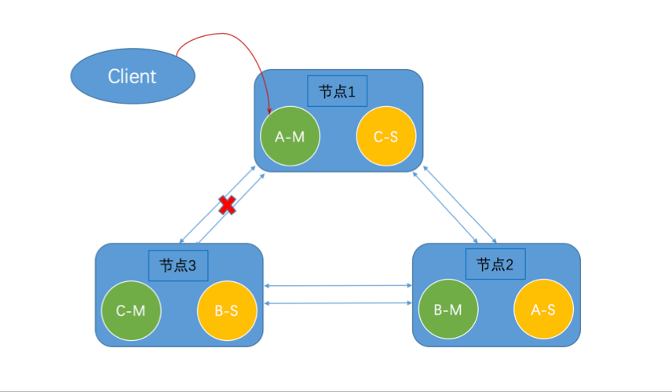
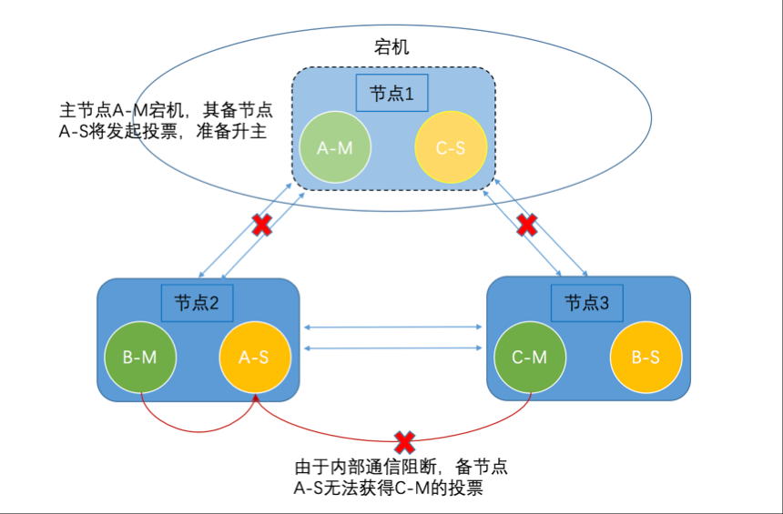

- 01 开篇词：从中间件开始学习分布式.md.html
- 02 走进分布式中间件（课前必读）.md.html
- 03 主流分布式缓存方案的解读及比较.md.html
- 04 分布式一致性协议 Gossip 和 Redis 集群原理解析.md.html
- 05 基于 Redis 的分布式缓存实现及加固策略.md.html
- 06 Redis 实际应用中的异常场景及其根因分析和解决方案.md.html
- 07 Redis-Cluster 故障倒换调优原理分析.md.html
- 08 基于 Redis 的分布式锁实现及其踩坑案例.md.html
- 09 分布式一致性算法 Raft 和 Etcd 原理解析.md.html
- 10 基于 Etcd 的分布式锁实现原理及方案.md.html
- 11 主流的分布式消息队列方案解读及比较.md.html
- 12 搭建基于 Kafka 和 ZooKeeper 的分布式消息队列.md.html
- 13 深入解读基于 Kafka 和 ZooKeeper 的分布式消息队列原理.md.html
- 14 深入浅出解读 Kafka 的可靠性机制.md.html
06 Redis 实际应用中的异常场景及其根因分析和解决方案
上一篇较为详细地介绍了基于 Redis 的分布式缓存实现方案，解决了 “怎么用” 的问题。但是，在实际应用中，异常场景时有出现，作为一名攻城狮，仅仅“会用”是不够的，还需要能够定位、解决实际应用中出现的异常问题。
本文将介绍一组 Redis 实际应用中遇到的异常场景，如 Redis 进程无法拉起、故障倒换失败、Slot 指派失败等，并针对这些异常场景给出根因分析和可供参考的解决方案。
1. redis-server 启动报错
我们先看第一个异常场景，即 redis-server启动报错:
version 'GLIBC_2.14' not found
接下来解析它的根因及解决方案。
1.1 问题基本信息
假设有一项目，使用 Redis 集群作为分布式缓存，它只是整个项目中的一个模块。
Redis 集群部署环境为 Suse 12 Linux。
每一次迭代，项目组都会编译一个大包进行验证，在同一套部署环境中，Redis 集群部署“偶现”失败，部分节点上 redis-server 进程未能拉起，尝试用命令：./redis-server ./xxx/redis.conf 手动拉起 redis-server 进程，结果失败，报如下错误：
/lib64/libc.so.6: version `GLIBC_2.14' not found(required by /opt/…/redis-server)
1.2 表因分析
很明显，报错信息显示安装环境 Linux 系统中找不到 GLIBC_2.14 版本库，而 redsi-server 依赖 GLIBC_2.14，使用命令：
strings /lib64/libc.so.6 | grep GLIBC
查看安装环境 GLIBC 版本，如下所示：
install_ENV:/opt/xxx/redis/bin # strings /lib64/libc.so.6 | grep GLIBC
GLIBC_2.2.5
GLIBC_2.2.6
GLIBC_2.3
GLIBC_2.3.2
GLIBC_2.3.3
GLIBC_2.3.4
GLIBC_2.4
GLIBC_2.5
GLIBC_2.6
GLIBC_2.7
GLIBC_2.8
GLIBC_2.9
GLIBC_2.10
GLIBC_2.11
GLIBC_PRIVATE
可以看出，安装环境系统最高支持 GLIBC_2.11，低于需要的 2.14 版本。至此，可初步定性为：编译 redis-server 的编译机 GLIBC 版本（2.14）高于安装环境的 GLIBC 版本（2.11），即高版本编译，低版本安装，因不兼容而安装失败。
进一步分析，使用命令：
strings /lib/x86_64-linux-gnu/libc.so.6 | grep GLIBC
查看编译机（Ubuntu）的 GLIBC 版本：编译机 GLIBC 版本高达 2.18（为谨慎起见，查看 libc.so.6 的软连接，确认实际采用的 GLIBC 版本）：
compile_ENV: # strings /lib/x86_64-linux-gnu/libc.so.6 | grep GLIBC
GLIBC_2.2.5
GLIBC_2.2.6
GLIBC_2.3
GLIBC_2.3.2
GLIBC_2.3.3
GLIBC_2.3.4
GLIBC_2.4
GLIBC_2.5
GLIBC_2.6
GLIBC_2.7
GLIBC_2.8
GLIBC_2.9
GLIBC_2.10
GLIBC_2.11
GLIBC_2.12
GLIBC_2.13
GLIBC_2.14
GLIBC_2.15
GLIBC_2.16
GLIBC_2.17
GLIBC_2.18
GLIBC_PRIVATE
如果是 GLIBC 版本问题，编译机的版本远高于安装环境，上述问题不应该为“偶现”，应该“必现”，因此，GLIBC 版本不是导致上述问题的根因。
1.3 根因分析
在 redis-server 安装路径下输入命令：
objdump -T redis-server| fgrep GLIBC_2.14
查看 redis-server 依赖的 GLIBC_2.14 版本库的具体函数。如下所示，只有一个函数 memcpy，依赖版本为 GLIBC_2.14。
install_ENV:/opt/xxx/redis/bin # objdump -T redis-server| fgrep GLIBC_2.14
0000000000000000 DF *UND* 0000000000000000 GLIBC_2.14 memcpy
输入命令：
objdump -T /lib64/libc.so.6 | fgrep
memcpy
查看安装环境支持的 memcpy 版本。如下所示，安装环境支持的 memcpy 函数对应GLIBC_2.2.5 版本： 。
install_ENV:/opt/xxx/redis/bin # objdump -T /lib64/libc.so.6 | fgrep memcpy
000000000008c400 w DF .text 0000000000000009 GLIBC_2.2.5 wmemcpy
00000000000eef00 g DF .text 000000000000001b GLIBC_2.4 __wmemcpy_chk
0000000000084670 g DF .text 0000000000000465 GLIBC_2.2.5 memcpy
0000000000084660 g DF .text 0000000000000009 GLIBC_2.3.4 __memcpy_chk
输入命令：
objdump -T /lib/x86_64-linux-gnu/libc.so.6 | fgrep memcpy
查看编译机支持的 memcpy 版本：
compile_ENV:# objdump -T /lib/x86_64-linux-gnu/libc.so.6 | fgrep memcpy
00000000000alcc0 w DF .text 0000000000000009 GLIBC_2.2.5 wmemcpy
000000000010bdf0 g DF .text 000000000000001b GLIBC_2.4 __wmemcpy_chk
0000000000091620 g DF .text 0000000000000465 GLIBC_2.14 memcpy
000000000008c420 g DF .text 0000000000000465 (GLIBC_2.2.5) memcpy
0000000000108990 g DF .text 0000000000000009 GLIBC_2.3.4 __memcpy_chk
可见，编译机支持两种版本的 memcpy 函数（2.14和2.2.5）。至此，根因已清晰：
Redis 源码依赖 GLIBC 提供的 memcpy 函数，在分布式编译中概率性地采用
memcpy[GLIBC_2.2.5]和memcpy[GLIBC2.14]编译redis-server，而安装环境仅支持memcpy[GLIBC_2.2.5]，由此导致redis-server概率性安装失败。
1.4 解决方案
这里提供三种解决方案。
方案一，升级安装环境的 GLIBC 版本，这显然是非常不明智的，无异于削足适履。
方案二，统一编译环境和安装环境，消除版本差异，这种方案需要满足一个约束：安装环境版本可控。如果你卖的是产品，用户将你的产品部署到什么系统中，你可能没办法控制。如果是，该方案不可取；
方案三，也就是最佳方案。可在 Redis 源码中添加约束，显式指定所依赖的 memcpy 函数的 GLIBC 版本，需添加的约束代码如下：
__asm__(".symver memcpy,[email protected]_2.2.5");
注意：只需在调用函数 memcpy 的源文件中加入此约束。
1.5 解决方案的验证
步骤1，编写一个简单的 C 测试程序：test.c，功能为将 src 中的字符串复制到字符数组 dest 中。代码如下：
#include<stdio.h>
#include<string.h>
int main()
{
char*src="Just for Testing";
char dest[20];
memcpy(dest,src,strlen(src));
d[strlen(src)]='\0';
printf("%s",dest);
getchar();
return 1;
}
步骤2，在同时具有 GLIBC_2.2.5 和 GLIBC2.14 版本 memcpy 的 Linux 系统上编译 test.c，执行命令：gcc -o test test.c，再运行 test 可执行文件，输出结果：Just for Testing。
步骤3，执行命令：objdump -T test| fgrep GLIBC_2.14 确认 test 依赖的 memcpy 函数的 GLIBC 版本，可发现 memcpy 采用的是 GLIBC_2.14 版本。
步骤4，在源码中对依赖的 memcpy 函数进行版本约束，使其按指定版本编译。添加约束代码：__asm__(".symver memcpy,[email protected]_2.2.5");：
#include<stdio.h>
#include<string.h>
__asm__(".symver memcpy,[email protected]_2.2.5");
int main()
{
char*src="Just for Testing";
char dest[20];
memcpy(dest,src,strlen(src));
d[strlen(src)]='\0';
printf("%s",dest);
getchar();
return 1;
}
步骤5，再次执行编译，运行，检测 memcpy 的版本，将会看到，test 依赖的 memcpy 的版本为 GLIBC_2.2.5，说明添加的版本约束生效。
2. OpenSSL 版本不兼容导致 Redis 进程拉起失败
2.1 问题基本信息
曾经遇到这样一个需求：出于安全考虑，在 Redis 中加入了证书机制，因此使用了 OpenSSL。正因为它的使用，在安装部署中遇到了 redis-server 进程无法拉起的问题。由于安装环境（Centos 6.2 系统）中 OpenSSL 版本低于编译环境，两者不兼容，导致 redis-server 启动失败。
2.2 初步定位
部署 Redis 集群失败，部分节点 redis-server 进程无法拉起，没有报错信息。尝试 GDB 调试，执行命令：gdb ./redis-server，报出如下错误内容：
/opt/xxx/redis-server: symbol lookup error: /opt/xxx/redis-server: undefined symbol: TLSv1_2_server_method
2.3 根因分析
根据报错内容，很明显，redis-server 运行中，有一个函数 TLSv1_2_server_method 找不到，那么，直观的思路便是查询 TLSv1_2_server_method，根据 IBM 的介绍，获悉此函数为 OpenSSL 库函数。
根据报错提示，猜测为 OpenSSL 版本问题，于是，分别查询安装环境和编译环境的 OpenSSL 版本：
查看安装环境OpenSSL版本：命令openssl version
Install-DEV:# openssl version OpenSSL
1.0.0-fips 29 Mar 2010
然后查看编译环境的OpenSSL版本：
Compile-DEV:# openssl version
OpenSSL 1.0.2h 3 May 2016
从查询结果可以看出，编译环境和安装环境的 OpenSSL 版本差距明显，到 OpenSSL 官网查询，确认 TLSv1_2_server_method 函数在 OpenSSL 1.0.1e 以后才出现，至此问题定位完成。结论是：编译机和执行机 OpenSSL 版本相差过大，不兼容。
2.4 解决方案
鉴于实际安装部署中，操作系统版本较多，常用的有 CentOS 7.1、CentOS 6.2、CentOs7.4；Red Hat 7.0、Red Hat 6.4；SuSE 11 SP4、SuSE 12 SP2 等，这些系统搭载的 OpenSSL 版本差别较大，可能存在不兼容的问题，因此，设计解决方案如下。
将对 OpenSSL 的依赖打入 redis-server 中，解除 redis-server 对操作系统的 OpenSSL 依赖。修改案例如下：
#1.自定义脚本，准备好 Redis 编译依赖的 OpenSSL，并放入 Redis 源#文件 include 和 lib
tar -zxvf ../openssl-1.0.2k.tar.gz
cd openssl-1.0.2k
./config -fPIC no-shared
make
cd ..
mkdir lib
cp openssl-1.0.2k/libcrypto.a ./lib
cp openssl-1.0.2k/libssl.a ./lib
mkdir include
cp openssl-1.0.2k/include/openssl/* ./include
#2.修改 Redis 原生 MakeFile 文件
else
# All the other OSes (notably Linux)
FINAL_LDFLAGS+= -rdynamic
FINAL_LIBS+= -pthread -lrt
#此行有新增内容
FINAL_LIBS+= -L../../lib -lssl -lcrypto
endif
endif
endif
#Include paths to dependencies
#此行有新增内容
FINAL_CFLAGS+= -I../deps/hiredis -I../deps/linenoise -I../deps/lua/src -I../../include
3．nodes-xxx.conf 错误导致 Redis 进程拉起失败
3.1 问题基本信息
集群模式下，假设有一个 Redis 节点宕机，由于 Redis 集群本身有可靠性机制，通过故障倒换，备节点升主，集群仍可以提供服务。然而，宕机的节点经过修复，一段时间后重新上电，却发现 redis-server 进程无法拉起，查看服务端日志，报错信息如下：
=== REDIS BUG REPORT START: Cut & paste starting from here ===
78114:M 02 Apr 21:59:54.538 # Redis 3.0.7.6 crashed by signal: 11
78114:M 02 Apr 21:59:54.538 # SIGSEGV caused by address: 0x200000004
78114:M 02 Apr 21:59:54.538 # Failed assertion: <no assertion failed> (<no file>:0)
78114:M 02 Apr 21:59:54.538 # --- STACK TRACE
/xxx/bin/redis-server(logStackTrace+0x44)[0x494074]
/lib64/libc.so.6(+0x3703a)[0x7fe90a86603a]
/usr/java/jre1.8.0_162/lib/amd64/server/libjvm.so(+0x92b3c2)[0x7fe90b8f23c2]
/usr/java/jre1.8.0_162/lib/amd64/server/libjvm.so(JVM_handle_linux_signal+0xb6)[0x7fe90b8f9196]
/usr/java/jre1.8.0_162/lib/amd64/server/libjvm.so(+0x928253)[0x7fe90b8ef253]
/lib64/libpthread.so.0(+0xf7c0)[0x7fe90abb57c0]
/lib64/libc.so.6(+0x3703a)[0x7fe90a86603a]
/xxx/bin/redis-server(clusterLoadConfig+0x117)[0x49d257]
/xxx/bin/redis-server(clusterInit+0xfd)[0x49d99d]
/opt/xxx/bin/redis-server(initServer+0x595)[0x464ec5]
/opt/xxxs/bin/redis-server(main+0x412)[0x465ef2]
/lib64/libc.so.6(__libc_start_main+0xe6)[0x7fe90a84dc36]
/opt/xxx/bin/redis-server[0x45a029]
78114:M 02 Apr 21:59:54.538 # --- INFO OUTPUT
3.2 问题根因
通过排查，我们发现问题根因在于宕机节点上的 Redis 集群配置文件 nodes-xxx.conf 存在异常，最后一行信息不完整。
正常的集群配置文件 nodes-xxx.conf 最后一行的形式是这样的：
vars currentEpoch 36 lastVoteEpoch 36
故障节点 nodes-xxx.conf 最后一行的形式却是这样的：
vars currentEpoch
Redis 集群一旦创建完成，每一个节点都会生成一个保存集群基本信息的配置文件（nodes-xxx.conf），当下线的节点重新上线时，会加载这个配置文件以恢复集群。这个过程中会调用一系列函数，如下所示：
main()->initServer()->clusterInit(void)->clusterLoadConfig(char *filename)
加载配置文件的函数 clusterLoadConfig(char *filename) 部分代码如下：
/* Split the line into arguments for processing. */
argv = sdssplitargs(line,&argc);
if (argv == NULL) goto fmterr;
/* Handle the special "vars" line. Don't pretend it is the last
* line even if it actually is when generated by Redis. */
if (strcasecmp(argv[0],"vars") == 0) {
for (j = 1; j < argc; j += 2) {
if (strcasecmp(argv[j],"currentEpoch") == 0) {
server.cluster->currentEpoch =
strtoull(argv[j+1],NULL,10);
} else if (strcasecmp(argv[j],"lastVoteEpoch") == 0) {
server.cluster->lastVoteEpoch =
strtoull(argv[j+1],NULL,10);
} else {
redisLog(REDIS_WARNING,
"Skipping unknown cluster config variable '%s'",
argv[j]);
}
}
sdsfreesplitres(argv,argc);
continue;
}
/* Regular config lines have at least eight fields */
if (argc < 8) goto fmterr;
很明显，在加载配置文件时，由于配置文件存在上述错误，经过分割，参数 argc=2（空格也计算在内），argv =["vars"，"currentEpoch"]，由于 currentEpoch 存在，将会执行 strtoull(argv[j+1],NULL,10)，即为：strtoull(argv[2],NULL,10)，而 argv[2] 事实上是不存在的，因此报错。
3.3 解决方案
修改源码，增加校验机制防止发生此类错误：对于一个宕机的节点，它的 currentEpoch 必然小于等于在线的节点，一旦宕机的节点重新上线，也会根据收到的其它节点的报文更新自己的 currentEpoch，因此，可以考虑为 currentEpoch 设置一个默认值，当 nodes-xxx.conf 出错时，可以采用默认值。另外，需要将这一行代码进行容错处理，这行代码会检验 nodes-xxx.conf 最后一行是否完整，不完整则报错。
/* Regular config lines have at least eight fields */
if (argc < 8) goto fmterr;
3.4 补充
Redis 集群配置文件 nodes-xxx.conf 如果出现错误，对应的节点宕机后无法自愈。除了上面介绍的报错案例，nodes-xxx.conf 的缺损情况不同，报错内容也有区别，比如，下面这种报错形式：
=== REDIS BUG REPORT START: Cut & paste starting from here ===
55251:M 02 Apr 19:38:35.892 # ------------------------------------------------
55251:M 02 Apr 19:38:35.892 # !!! Software Failure. Press left mouse button to continue
55251:M 02 Apr 19:38:35.892 # Guru Meditation: "Unknown flag in redis cluster config file" #cluster.c:208
55251:M 02 Apr 19:38:35.892 # (forcing SIGSEGV in order to print the stack trace)
55251:M 02 Apr 19:38:35.892 # ------------------------------------------------
55251:M 02 Apr 19:38:35.892 # Redis 3.0.7.6 crashed by signal: 11
55251:M 02 Apr 19:38:35.892 # SIGSEGV caused by address: 0xffffffffffffffff
55251:M 02 Apr 19:38:35.892 # Failed assertion: <no assertion failed> (<no file>:0)
55251:M 02 Apr 19:38:35.892 # --- STACK TRACE
/opt/xxx/bin/redis-server(logStackTrace+0x44)[0x494074]
/opt/xxx/bin/redis-server(_redisPanic+0x7e)[0x493b4e]
/usr/java/jre1.8.0_162/lib/amd64/server/libjvm.so(+0x92b3c2)[0x7fe450d0f3c2]
/usr/java/jre1.8.0_162/lib/amd64/server/libjvm.so(JVM_handle_linux_signal+0xb6)[0x7fe450d16196]
/usr/java/jre1.8.0_162/lib/amd64/server/libjvm.so(+0x928253)[0x7fe450d0c253]
/lib64/libpthread.so.0(+0xf7c0)[0x7fe44ffd27c0]
/opt/xxx/bin/redis-server(_redisPanic+0x7e)[0x493b4e]
/opt/xxx/bin/redis-server(clusterLoadConfig+0x70e)[0x49d84e]
/opt/xxx/bin/redis-server(clusterInit+0xfd)[0x49d99d]
/opt/xxx/bin/redis-server(initServer+0x595)[0x464ec5]
/opt/xxxbin/redis-server(main+0x412)[0x465ef2]
/lib64/libc.so.6(__libc_start_main+0xe6)[0x7fe44fc6ac36]
4. Redis 服务端 Slot 指派报错
如果 Redis 服务端 Slot 指派报如下错误：
ERR Slot XXX is already busy
该如何解决呢？
4.1 问题基本信息
报错出现场景一般有两种：
- 在一套创建过 Redis 集群的环境，未作彻底清理的情况下，使用
redis-trib工具再次创建集群； - Redis 集群模式下，删除了一个主节点的 Slot，再将这些 Slot 重新指派给其它的主节点。
上述两种场景引起报错的根因是一致的：清理信息不彻底，有残留，从而报错: ERR Slot XXX is already busy。
4.2 根因分析
查看 Redis 源码，找到报错相应的代码片段，如下：
// 如果这是 addslots 命令，并且槽已经有节点在负责，那么返回一个错误
if (!del && server.cluster->slots[slot])
{
addReplyErrorFormat(c,"Slot %d is already busy", slot);
zfree(slots);
return;
}
分析与解释
- 结合上述代码，在对目标节点进行 addslots 操作（指派 Slot ）时，目标节点会基于自己保存的集群状态信息（clusterState）检测这些 Slot 的标记位，进而判断这些 Slot 是否已经指派，如果已经指派则会报错。
- 结合故障场景，虽然已经删除了原主节点的 Slot，但是这个消息在集群内部的传递并不是实时的；而集群模式下，每一个节点都保存有整个集群的信息，虽然原主节点的 Slot 已经删除，但目标节点并没有及时感知到，当试图将 Slot 指派给目标节点时，就会报错。
4.3 解决方案
主要有以下两种解决方案：
- 借助
redis-cli登录各个节点，执行cluster flushall和cluster reset命令； - 如果有高级客户端（如 Lettuce、Jedis)，可直接通过高级客户端调用与方案 1 中功能类似的方法来解决该问题。
5. 防火墙、IP 限制导致 Redis 节点间出现单通
5.1 问题基本信息
Redis 集群模式，读写操作部分失败，大多数时候成功，登录 Redis 本地客户端，查看集群信息，显示集群运转正常。
5.2 根因分析
我们遵循如下排查过程，查看故障点到底在哪里：
- 针对缓存操作（读/写）部分失败的情况，对 Redis 集群 Master 节点逐一排查，发现有两个 Master 节点互相认为对方为 PFAIL 状态；
- 计算读写操作失败的 Key 对应的 Slot 编号，发现对应的 Slot 编号正好归属于步骤1中的两个 Master。
- 对两个疑似出现故障 Master 进行检测，发现两个 Master 节点相互无法 Ping 通，进一步通过 iptables 命令定位到两个节点防火墙对 IP 进行了限制，导致两个节点相互不可访问。
故障点找到了，那么，既然存在故障，为何集群状态显示正常，只有部分读写操作失败呢？有必要解释一下，为了便于阐明问题，我以 3 主 3 备集群为例。
在前面的章节中，已经介绍了 Redis 集群混合路由查询的原理，在此，直接引用原理示意图，客户端与主节点 A 直连，进行读写操作时，Key 对应的 Slot 可能并不在当前直连的节点上，经过“重定向”才能转发到正确的节点，如下图所示：
如果 A、C 节点之间通信被阻断，上述混合路由查询自然就不能成功了，如下图所示：

如上图所示，节点 1 与节点 3 互相不可访问，这种情况下，节点 1 和节点 3 相互认为对方下线，因此会将对方标记为 PFAIL 状态，但由于持有这一观点（认为节点 1、3 下线）的主节点数量少于主节点总数的一半，不会发起故障倒换，集群状态正常。
虽然集群显示状态正常，但存在潜在问题，比如节点 1 上的客户端进行读写操作的 Key 位于节点 3 主节点的 Slot 中，这时进行读写操作，由于互不可达，必然失败。读写操作的目标节点是由 Key 决定的，CRC16 算法计算出 Key 对应的 Slot 编号，根据 Slot 编号确定目标节点。同时，不同的 Key 对应的 Slot 不尽相同，从节点 1 的视角来看，那些匹配节点 2 所属 Slot 位的 Key，读写操作都可以正常进行，而匹配节点 3 所属 Slot 位的 Key 则会报错，这样就解释了为何只有部分读写操作失败。
5.3 解决方案
主要有以下两种解决方案：
- 采用第 02 课中介绍的 “基于代理分片” 或者 “客户端分片”，可以规避上述问题；
- Redis 仅作为缓存，数据库做持久化，当 Redis 不可用时，可向数据库进行读写操作，但这样有一个明显的缺点：故障场景下，数据库的压力较大。
6. Redis 集群内部通信异常，导致故障倒换失败
本节将介绍一种根因与异常场景 5 类似，但是故障现象迥异的异常场景。
6.1 问题基本信息
国内某电商巨头仓储项目出现现网问题（即线上问题），3 主 3 备 Redis 集群中有一个节点宕机（无法恢复），Redis 集群无法提供服务。
6.2 问题根因
我们遵循如下排查过程，查看故障点到底在哪里：
- 登录本地客户端（
redis-cli）查看集群状态信息（cluster info），显示只有两个主节点在线； - 查看故障节点对应的备节点日志信息，确认备节点升主失败的原因：未能获得超过半数主节点的投票；
- 怀疑是网络问题，查看丢包率检测日志，显示无丢包；
- 查看 Redis 对应端口监听状态，确认监听正常；
- 通过
telnet ip port命令检测节点间通信情况，发现其中一个主节点与备节点无法联通，进一步定位为交换机故障。
上述故障场景示意图如下：

故障主节点 A-M 的备节点 A-S 升主需要获得超过半数的主节点投票，故障场景下，存活的两个主节点中，C-M 与备节点 A-S 内部通信被阻断，导致备节点 A-S 只能获得 1 张票，没有超过集群规模的半数（3 节点集群，至少需要 2 张票），从而无法升主，进而导致故障主节点故障倒换失败，集群无法恢复。
6.3 解决方案及改进措施
本节所述故障场景，基于 3 主 3 备的架构，Redis 集群不具备自愈的硬性条件，没有解决方案。不过，如果扩大集群的规模，比如 5 主 5 备，出现同样故障则是可以自愈的。